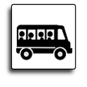

Requisitos 1. Estar debidamente inscrito o reinscrito en tiempo y forma en el cuatrimestre junio - septiembre del 2016. 2. Solicitarlo el (fecha) mediante el Sistema Integral de Información (SII) 3. En caso de que el servicio sea autorizado, deberá realizar su pago dentro de la vigencia que la referencia indique, de lo contrario el lugar será asignado a otro alumno en espera. 4. Presentar original y copia de comprobante de pago en la ventanilla de Servicios Estudiantiles para que así puedan obtener el refrendo correspondiente, o en caso de ser primera vez su credencial. |
|||
Horarios de solicitud • Alumnos del turno de matutino deberán solicitarlo a partir de las 16:00 hrs. • Alumnos del turno vespertino a partir de las 10:00 hrs. |
|||
Costo Costo de Servicio $632.22 |
|||
|  | Lugares Los espacios serán autorizados de acuerdo al cupo de cada ruta y en el horario de solicitud por parte del alumno.
|